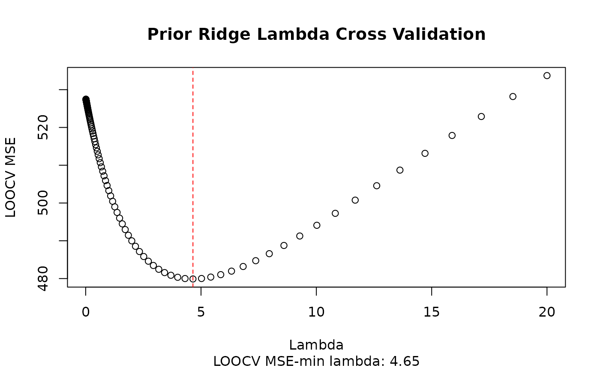
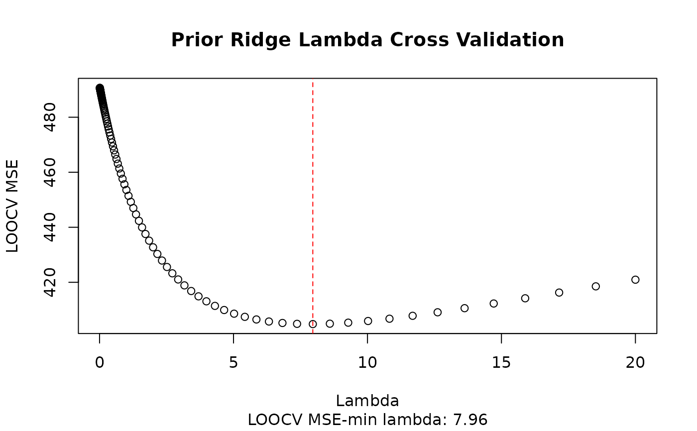

Given an event key, selects an optimal lambda using LOOCV and fits the prior ridge model using pre-event EPA from statbotics as the prior.
Arguments
- event_key
(char) TBA-legal event key (ex. "2025mdsev")
- grid
(vector) all possible lambda values to consider. Defaults to starting at just above zero to reduce matrix singularity in fits (guarantees that X^tX + (lambda)I is positive definite.)
- n_cores
(int) number of cores to parallelize over. If NULL, will select (max - 1) cores
Examples
fit_event_pridge("2025mdsev")

#> frc339 frc404 frc449 frc623 frc888 frc1111 frc1727 frc1811
#> 19.284633 39.697320 60.885375 20.886995 44.638382 21.701895 45.046136 25.427273
#> frc1885 frc2106 frc2199 frc2377 frc2421 frc2537 frc3714 frc3748
#> 28.719661 54.237746 39.446432 12.071666 22.142069 19.099738 12.307539 35.900374
#> frc3793 frc4464 frc4541 frc5587 frc7770 frc7886 frc8622 frc9403
#> 20.325909 7.232768 25.341529 14.657265 24.846769 18.131645 13.798259 21.007689
#> frc9709 frc10224 frc10449 frc10679
#> 14.699695 34.010732 10.868855 21.933725
fit_event_pridge("2023new", n_cores = 3)

#> frc11 frc177 frc179 frc195 frc494 frc503 frc857 frc900
#> 52.51733 58.77274 56.75854 64.22211 59.66157 50.09296 53.16461 53.18525
#> frc955 frc1023 frc1123 frc1156 frc1466 frc1468 frc1501 frc1538
#> 52.39197 53.11818 51.92172 45.25586 47.95408 51.50870 53.89976 63.62444
#> frc1629 frc1746 frc1757 frc1816 frc1836 frc2642 frc2960 frc2992
#> 50.18540 57.02610 56.70148 43.76706 36.06409 52.72162 41.75229 55.51185
#> frc3003 frc3039 frc3161 frc3184 frc3218 frc3478 frc3538 frc3572
#> 41.37594 64.04123 45.78516 60.83962 60.15310 53.32546 72.73174 45.55801
#> frc3767 frc3932 frc3940 frc4069 frc4099 frc4112 frc4143 frc4145
#> 50.02785 44.00915 52.26938 49.71518 48.80114 30.59901 63.48189 49.94778
#> frc4329 frc4419 frc4522 frc4663 frc4905 frc4909 frc4944 frc5006
#> 51.51096 47.01420 68.31612 42.72954 39.73214 57.44389 45.78880 48.55417
#> frc5135 frc5172 frc5274 frc5338 frc5553 frc5665 frc5804 frc5990
#> 51.11450 35.33598 38.26436 40.44377 28.46841 39.79237 57.24455 53.94311
#> frc6431 frc6606 frc6657 frc6817 frc6909 frc7072 frc7285 frc7428
#> 7.46206 19.86502 30.18666 18.81021 17.64623 37.33767 52.35304 27.86302
#> frc7617 frc8015 frc8016 frc8592 frc8717 frc8808 frc8847 frc9023
#> 52.80705 16.68925 29.91858 54.75940 26.42986 35.67426 38.92222 27.09047
#> frc9030 frc9062 frc9084 frc9126 frc9140
#> 23.29481 20.09700 50.86701 23.82482 46.36391